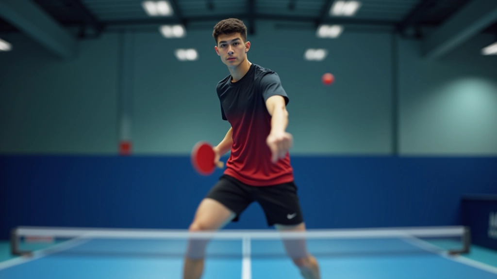
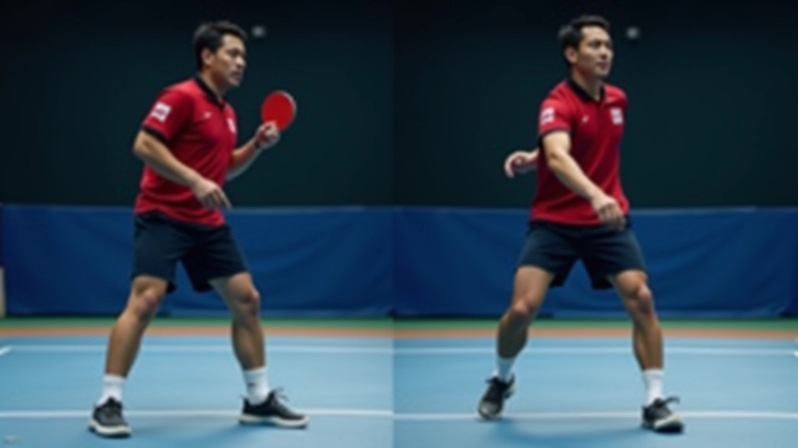
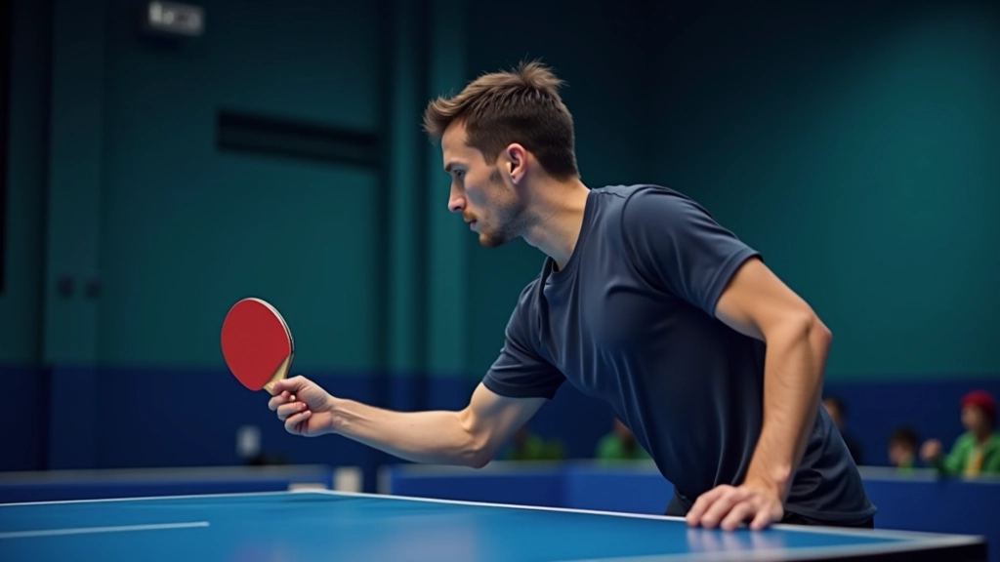
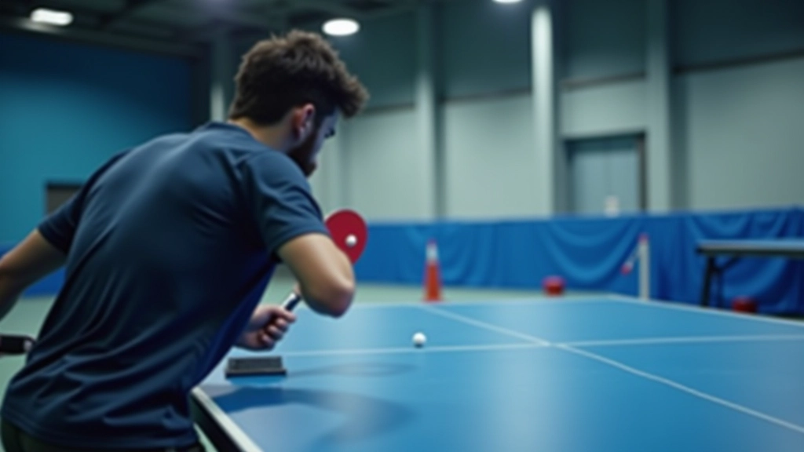
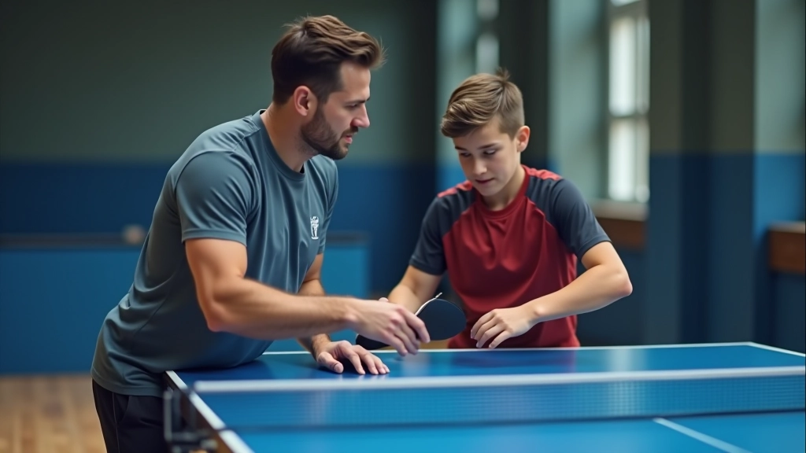

تمارين تقوية الذراع والكتف للوب الخلفي
تمارين عملية تساعدك على بناء القوة اللازمة لتنفيذ اللوب بقوة واتساق. نركز على التمارين التي تستهدف العضلات المستخدمة مباشرة في حركة اللوب.
أغلب المبتدئين يرتكبون أخطاء في وضعية الجسد أثناء اللوب. نشرح الأخطاء الثلاثة الأكثر شيوعاً وكيفية تصحيحها خطوة بخطوة، مع تقنيات عملية تساعدك على التحسن بسرعة.


فريق المحتوى التحريري
كتبه فريق لوب الجزيرة التحريري، المتخصص في تقديم إرشادات عملية وسهلة المتابعة لإتقان اللوب الخلفي.
الموضع الصحيح هو أساس كل شيء في اللوب. عندما تقف بشكل خاطئ، حتى لو كانت حركة ذراعك مثالية، النتيجة ستكون ضعيفة وغير متسقة. الحقيقة هي أن معظم المبتدئين يركزون على حركة اليد فقط ولا ينتبهون لأقدامهم وتوازن جسدهم.
الموضع يؤثر على ثلاث أشياء أساسية: القوة التي تنقلها للكرة، الاستقرار والتوازن، والقدرة على التحرك بسرعة للكرة التالية. عندما تكون في الموضع الخاطئ، تفقد كل هذه الأشياء.


أكثر خطأ شيوعاً عند المبتدئين. يقفون بأرجل مستقيمة تماماً، كأنهم في حفل موسيقي. هذا يقلل من قدرتك على الحركة السريعة والاستجابة للكرات المختلفة.
كتفك غير متوازنين — يحدث هذا عندما تحاول الدوران بشكل مبالغ فيه. البعض يدير كتفه الأيمن للخلف جداً (أو الأيسر إذا كنت أعسر)، مما يجعل الحركة غير متناسقة. النتيجة: قوة ضعيفة وعدم سيطرة على الكرة.
المشكلة أيضاً أنك تصبح بطيء في الرجوع للموضع الأساسي بعد الضربة. عندما تكون كتفاك متوازنة، تستطيع العودة بسرعة وجاهزية أكثر.


المسافة من الطاولة حرجة جداً. البعض يقفون بعيداً جداً ولا يستطيعون الوصول للكرات. والبعض يقفون قريب جداً، مما يجعل حركة الذراع محدودة وغير فعالة.
الموضع الصحيح يسمح لك بأن تكون قريب كفاية للسيطرة، لكن بعيد كفاية لتحريك ذراعك بحرية كاملة. تقريباً متر واحد من الطاولة هو المسافة المثالية للمبتدئين.
لا تحتاج لساعات طويلة. تخصيص 15 دقيقة فقط قبل كل جلسة تدريب للتركيز على الموضع. إليك ما يجب أن تفحصه:
الأرجل — ركبتان منحنيتان، وزن على مقدم القدم. مارس الوقوف في هذا الموضع لمدة دقيقة كاملة
الكتفان — كتفان متوازيان، دوران من الخصر وليس من الكتفين. استخدم المرآة للتحقق
المسافة — متر واحد من الطاولة، خطوات صغيرة للأمام والخلف. اطلب من شخص أن يلاحظك

استخدم هاتفك لتصوير نفسك وأنت تلعب. عندما تشاهد الفيديو، ستري الأخطاء التي لا تشعر بها. هذا يساعد كثيراً في التصحيح السريع.
لا تحتاج لطاولة. قف أمام مرآة كبيرة وقم بحركات اللوب بدون كرة. شاهد موضع جسدك بشكل مباشر. هذا تمرين مهم جداً.
أخبر زميلك أو مدربك عن الأخطاء التي تعمل على تصحيحها. شخص خارجي يرى الأشياء التي لا تراها أنت. الملاحظة الخارجية قيمة جداً.
لا تحاول أن تكون سريع من الأول. ركز على الموضع الصحيح حتى لو كانت حركتك بطيئة. السرعة تأتي لاحقاً عندما يصبح الموضع عادة.
الموضع الصحيح ليس شيء معقد، لكنه يحتاج لوقت ومراقبة. في الأسابيع الثلاثة الأولى، ركز على هذه الأخطاء الثلاثة وحاول تصحيح واحد في كل مرة. لا تحاول تصحيح كل شيء في نفس الوقت.
بعد أن يصبح الموضع طبيعي، ستلاحظ أن قوتك زادت وتحكمك بالكرة أفضل. ستصبح حركاتك أسرع وأكثر دقة. هذا هو الوقت المناسب للانتقال لدراسة حركة الذراع بالتفصيل وتعقيدات التدوير والزوايا.
استمتع بعملية التعلم. تنس الطاولة رياضة جميلة وتحسن نفسك ستشعر به فوراً. كل يوم تدرب فيه، أنت تصبح أفضل قليلاً.
المعلومات في هذا المقال تقدم إرشادات تعليمية عامة حول تقنيات اللوب الخلفي في تنس الطاولة. كل لاعب مختلف في بنيته الجسدية وقدراته، لذلك قد تحتاج لتكييف هذه النصائح حسب وضعك الشخصي. نوصي بالتدريب تحت إشراف مدرب متخصص للحصول على تغذية راجعة شخصية وتجنب الإصابات. استشر متخصص في الرياضة إذا شعرت بأي ألم أو عدم ارتياح.
مقالات أخرى تساعدك على إتقان اللوب الخلفي
تمارين عملية تساعدك على بناء القوة اللازمة لتنفيذ اللوب بقوة واتساق. نركز على التمارين التي تستهدف العضلات المستخدمة مباشرة في حركة اللوب.

نوع المضرب يؤثر كثيراً على أداء اللوب. نساعدك على فهم الفروقات بين الخيارات المختلفة واختيار ما يناسب مستواك وأسلوبك.

بعد إتقان الأساسيات، انتقل للمستويات الأعلى. نشرح كيفية تطبيق اللوب في المباريات الفعلية والاستراتيجيات المتقدمة.